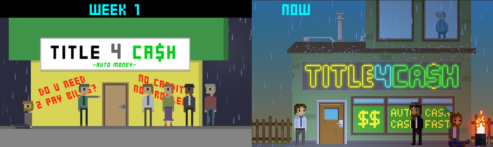
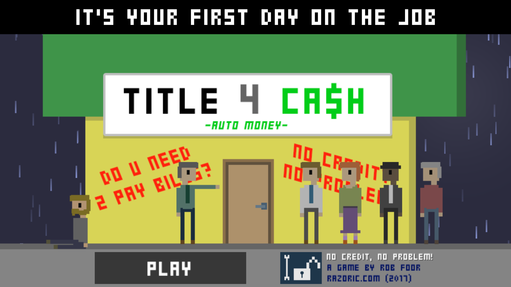

Development history
From a 48-hour game jam
to a full release.
The long development path from No Credit? No Problem! in 2015 to Bad Credit? No Problem! in 2024.

The game began in 2015 during Ludum Dare 33, a 48-hour game jam built around the theme “You Are the Monster.”
The original prototype
No Credit? No Problem! put players behind the desk as Employee0318, a title loan agent trying to survive a probation day by correctly processing ten applications.
The rules were simple but deliberately uncomfortable. Applicants needed matching identification, sufficient income, a vehicle worth more than the requested loan, and other basic qualifications. Being good at the job often meant participating in decisions that were bad for the applicant.

Life between versions
The idea stayed alive while work, promotions, and raising three boys took priority. The subject was also personal. Experiences around title loans and pawn shops shaped the game’s view of financial desperation and the people caught inside it.
The full game
By 2024, the short prototype had become a complete game. Players now worked a 14-day probation at Title 4 Cash, met story-driven applicants, dealt with a greedy boss, and unlocked Endless Shift after earning a full-time position.

The finished game kept the original moral tension but expanded the art, characters, story, sound, progression, and replayability. It remained a game about doing a job correctly while questioning what “correct” actually means.